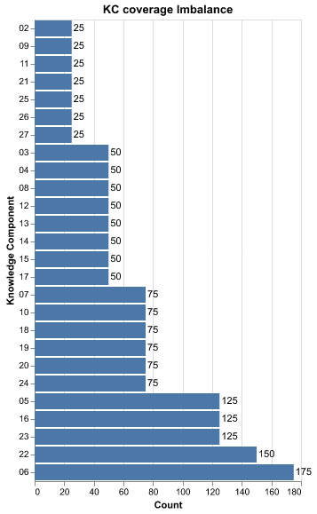
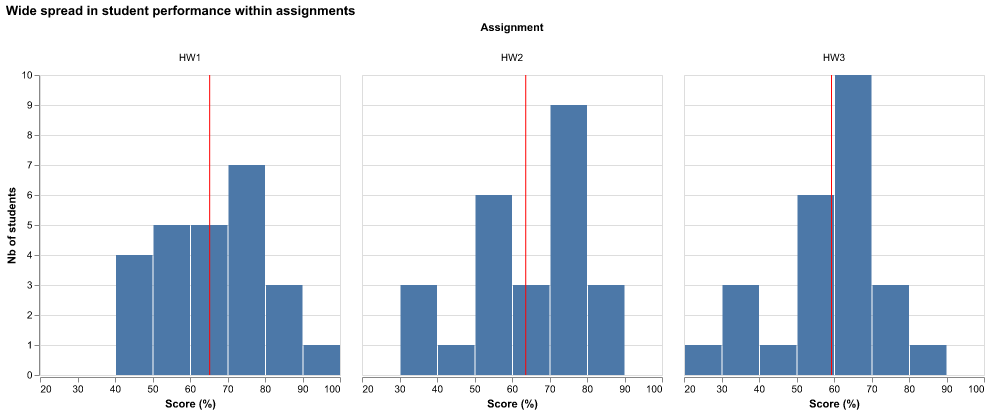
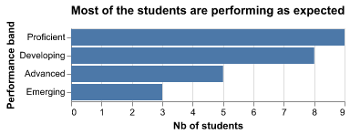
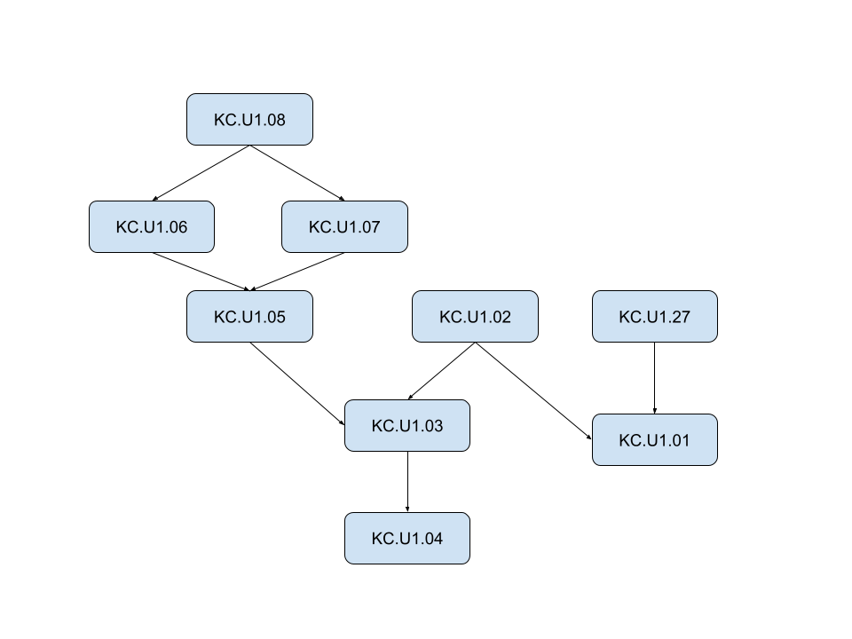

Proposal report
Executive Summary
Currently, tutors are relying primarily on manual processes and human memory to track student progress. This often leads to a lack of reliable and timely signals as to which areas students are struggling with. Similarly, parents often get inconsistent and unclear pictures of how their children are progressing.
Our solution would be to provide tutors with a fully functional pipeline and dashboard that would provide them with all the necessary tools to track student progress with specific skills and ensure that they can get timely signals to detect potentially problematic areas for students.
Introduction
The problem that we are tackling in this project is to help teachers track student mastery progress through time. This would allow us to ensure parents and students get timely feedback in a clear and concise manner. Knowledge tracing is a machine learning method to track and predict a student’s mastery over time based on their performance data.
We have 3 main objectives for this project :
- Create a mastery tracker that uses knowledge tracing to estimate student’s mastery probability
- Create an early warning system that flags areas that students are struggling with
- Create a dashboard application visualises the elements above and other students insights (e.g average scores)
The outcome of the project would be a fully functional and reproducible pipeline that updates the dashboard when given new data.
Data & Exploratory Data Analysis (EDA)
The dataset comes from an AP Statistics course and contains information about the course structure (number of assignments and classes), the knowledge structure (knowledge components and their relationships) and the student response structure (performance data for 25 students). It spans across 3 homework assignments (69 observations total), 27 knowledge components (38 edges between KCs) and 25 students for a total of 1725 item-level student records.
The observational unit in this dataset is the student’s grades which can be found in the Student_Observations file in the score column. This provides insights into the students’ performance.
The knowledge components are skills that students need to complete skills. These components are inter-dependent, with some KCs being prerequisites for others. This is what we are trying to estimate the mastery of.
Key insights
KC coverage imbalance

There is an imbalance in the number of observations for each knowledge component, with some having only 25 observations (i.e 1 per student) while others contain 175 observations (i.e 7 per student). This imbalance needs to be taken into account when modelling, since it means that the values estimated for the KCs with little number of observations are likely to be inaccurate.
Wide spread within assignments

Within the assignments there is a wide spread of performances with some students scoring consistently above 80% while others are below 50%. The shift in distribution range between homework 1 and 3 should also be considered
Performance band imbalance

The performance band distributions are also somewhat imbalanced, with there being 2 times more proficient students than emerging. This might lead to some prediction issues in the model building phase, especially when trying to make predictions for emerging students. This can be especially problematic since these are the students that the early warning system should flag
Knowledge component relationships

Some knowledge components are prerequisites of each other, which means that in order for a student to have mastered a KC, they need to have mastered all of its prerequisites. This is something that needs to be taken into account when modelling.
Data Science Approach
The objectives to be fulfilled in this project are a mastery tracker, an early warning system and a dashboard application.
Mastery Tracker
Our approach to estimating student mastery of the KC is going to be to use knowledge tracing models to build knowledge profiles for each student. Each profile will contain the KCs and the corresponding probability that the student has mastered it (mastery probability). These profiles will be dynamic and will be updated every time students interact with the KCs (i.e. every time a teacher inputs new data).
The mastery probabilities will be estimated using a knowledge tracing model. To determine which model we will be using, we will be building and comparing multiple different types of models to determine which one is the best fit for our data. The baseline model, to which we will compare the performance of all future models, will be a Bayesian Knowledge Tracing model. The simplicity and interpretability of this model makes it a natural choice as a baseline.
Early Warning System
The early warning system will flag knowledge components whose estimated mastery probability has dropped below a certain threshold.
Dashboard application
The dashboard application will display the Mastery Tracker as well as other insight into the students performance (average grades).
Evaluation & Success Criteria
Evaluation
We will be evaluating our approach on three fronts, as follows :
Model Validity
To preserve the dependency structure between KCs, the data will be split into train and test sets by student. We will be evaluating the model performance by comparing the mastery probability to the final exam scores of the students. Using RMSE to determine how far the predicted mastery probabilities are from the actual test scores (smaller the RMSE the stronger the predictive validity of the model).
Model Comparison
To find the model that is the best fit for our data, we will be comparing any model we fit to the baseline BKT model. Using RMSE and AIC/BIC we will be comparing the model fit with model complexity to ensure the final model fits all requirements.
Early Warning System Validity
We will create a dataset using the student’s performance band from Overall_Scores where Emerging students are labelled as Flag and the others are labelled as Not Flag. Using this dataset, we will be evaluating the Early Warning System as a binary classification problem with metrics like AUC, Precision and Recall to ensure that only necessary warnings are sent.
Success Criteria
We will consider our project a success if all the following conditions are met :
- The mastery tracker reliably estimates student mastery
- The early warning system reliably signals student struggle
- The dashboard provides a clear and reliable way to show student progress
- The dashboard provides teachers with class-wide descriptive statistics inclusive of skills, knowledge components and overall status of a class
- The dashboard provides students with personal progress, areas of concerns alongside “what to practice next”
Timeline
The project will be split into weekly milestones. Each milestone contains a list of elements which must be completed by the given deadline.
| Milestone | Due Date | Description |
|---|---|---|
| Milestone 1 | May 8 | - Pipeline that outputs model ready dataset - Bayesian Knowledge tracing model (model build and analysis) |
| Milestone 2 | May 15 | - Alternative models (model build and analysis) - Dashboard skeleton design |
| Milestone 3 | May 22 | - Final dashboard design - Final model selection |
| Milestone 4 | May 29 | - Dashboard update pipeline - Early warning system |
| Milestone 5 | June 25 | - Production ready product |